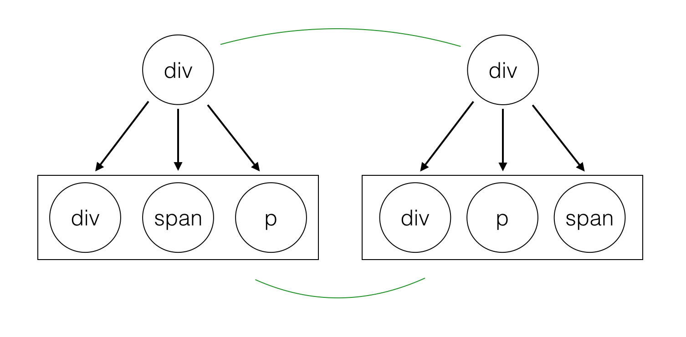
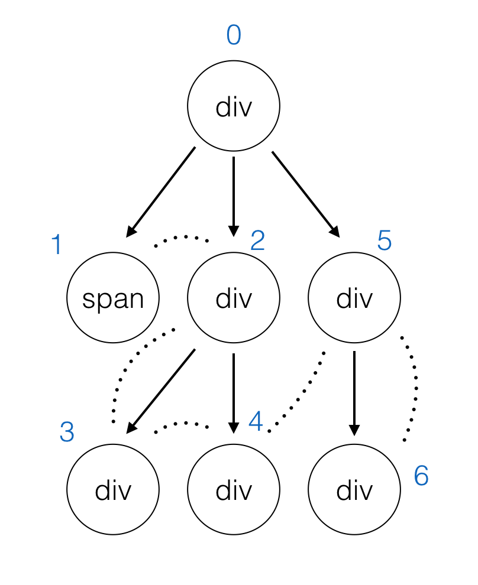

<!DOCTYPE html>
<html lang="">
  <head>
    
<meta charset="UTF-8"/>
<meta http-equiv="X-UA-Compatible" content="IE=edge" />
<meta name="viewport" content="width=device-width,user-scalable=no,initial-scale=1,minimum-scale=1,maximum-scale=1">


<meta http-equiv="Cache-Control" content="no-transform" />
<meta http-equiv="Cache-Control" content="no-siteapp" />


  <meta name="description" content="实现一个简单的 Virtual-Dom"/>


  <meta name="keywords" content="Front-End,Typescript," />


  <link rel="alternate" href="/atom.xml" title="Dreamacro">


  <link rel="shortcut icon" type="image/x-icon" href="/favicon.ico?v=1.1" />


<link rel="canonical" href="http://dreamacro.github.io/2017/05/07/Virtual-dom-implementation/"/>


<meta name="description" content="基本原理及相关步骤​   由于操作 DOM 的代价较大，手动维护 DOM 又过于麻烦，那么就需要有一套东西去降低这方面的复杂度，只需要去维护状态，就能更新相应的视图。 ​   而 Virtual-dom 就是一套解决方案，由于我们一般只在意一个 HTML 元素的 tag、attribute、children 等部分，所以我们可以把 HTML 元素用一个 interface（Typescript）">
<meta name="keywords" content="Front-End,Typescript">
<meta property="og:type" content="article">
<meta property="og:title" content="实现一个简单的 Virtual-Dom">
<meta property="og:url" content="http://dreamacro.github.io/2017/05/07/Virtual-dom-implementation/index.html">
<meta property="og:site_name" content="Dreamacro">
<meta property="og:description" content="基本原理及相关步骤​   由于操作 DOM 的代价较大，手动维护 DOM 又过于麻烦，那么就需要有一套东西去降低这方面的复杂度，只需要去维护状态，就能更新相应的视图。 ​   而 Virtual-dom 就是一套解决方案，由于我们一般只在意一个 HTML 元素的 tag、attribute、children 等部分，所以我们可以把 HTML 元素用一个 interface（Typescript）">
<meta property="og:locale" content="default">
<meta property="og:image" content="http://dreamacro.github.io/2017/05/07/Virtual-dom-implementation/diff_compare.png">
<meta property="og:image" content="http://dreamacro.github.io/2017/05/07/Virtual-dom-implementation/diff-dfs.png">
<meta property="og:updated_time" content="2018-05-20T16:04:05.057Z">
<meta name="twitter:card" content="summary">
<meta name="twitter:title" content="实现一个简单的 Virtual-Dom">
<meta name="twitter:description" content="基本原理及相关步骤​   由于操作 DOM 的代价较大，手动维护 DOM 又过于麻烦，那么就需要有一套东西去降低这方面的复杂度，只需要去维护状态，就能更新相应的视图。 ​   而 Virtual-dom 就是一套解决方案，由于我们一般只在意一个 HTML 元素的 tag、attribute、children 等部分，所以我们可以把 HTML 元素用一个 interface（Typescript）">
<meta name="twitter:image" content="http://dreamacro.github.io/2017/05/07/Virtual-dom-implementation/diff_compare.png">


<link rel="stylesheet" type="text/css" href="/css/style.css?v=1.1" />
<link href='https://fonts.googleapis.com/css?family=Open+Sans' rel='stylesheet'>


  <link rel="stylesheet" type="text/css" href="/lib/fancybox/jquery.fancybox.css" />


<script type="text/javascript">
  var themeConfig = {
    fancybox: {
      enable: true
    },
  };
</script>


  
  <script type="text/javascript">
    var _hmt = _hmt || [];
    (function() {
      var hm = document.createElement("script");
      hm.src = "https://hm.baidu.com/hm.js?271cd4895258110e7bd015c702f07446";
      var s = document.getElementsByTagName("script")[0];
      s.parentNode.insertBefore(hm, s);
    })();
  </script>


  <script type="text/javascript">
    (function(i,s,o,g,r,a,m){i['GoogleAnalyticsObject']=r;i[r]=i[r]||function(){
        (i[r].q=i[r].q||[]).push(arguments)},i[r].l=1*new Date();a=s.createElement(o),
        m=s.getElementsByTagName(o)[0];a.async=1;a.src=g;m.parentNode.insertBefore(a,m)
        })(window,document,'script','//www.google-analytics.com/analytics.js','ga');

        ga('create', 'UA-72808255-1', 'auto');
        ga('send', 'pageview');
  </script>


    <title> 实现一个简单的 Virtual-Dom - Dreamacro </title>
  </head>

  <body>
    <div id="page">
      <header id="masthead"><div class="site-header-inner">
    <h1 class="site-title">
        <a href="/." class="logo">Dreamacro</a>
    </h1>

    <nav id="nav-top">
        
            <ul id="menu-top" class="nav-top-items">
                
                    <li class="menu-item">
                        <a href="/archives">
                            
                            
                                Archives
                            
                        </a>
                    </li>
                
                    <li class="menu-item">
                        <a href="/atom.xml">
                            
                            
                                Rss
                            
                        </a>
                    </li>
                
            </ul>
        
  </nav>
</div>

      </header>
      <div id="content">
        
    <div id="primary">
        
  <article class="post">
    <header class="post-header">
      <h1 class="post-title">
        
          实现一个简单的 Virtual-Dom
        
      </h1>

      <time class="post-time">
          May 07 2017
      </time>
    </header>


    
            <div class="post-content">
            <h2 id="基本原理及相关步骤"><a href="#基本原理及相关步骤" class="headerlink" title="基本原理及相关步骤"></a>基本原理及相关步骤</h2><p>​   由于操作 DOM 的代价较大，手动维护 DOM 又过于麻烦，那么就需要有一套东西去降低这方面的复杂度，只需要去<strong>维护状态，就能更新相应的视图</strong>。</p>
<p>​   而 Virtual-dom 就是一套解决方案，由于我们一般只在意一个 HTML 元素的 <code>tag</code>、<code>attribute</code>、<code>children</code> 等部分，所以我们可以把 HTML 元素用一个 interface（Typescript） 表示出来</p>
<figure class="highlight typescript"><table><tr><td class="gutter"><pre><span class="line">1</span><br><span class="line">2</span><br><span class="line">3</span><br><span class="line">4</span><br><span class="line">5</span><br><span class="line">6</span><br><span class="line">7</span><br><span class="line">8</span><br><span class="line">9</span><br><span class="line">10</span><br><span class="line">11</span><br><span class="line">12</span><br><span class="line">13</span><br><span class="line">14</span><br></pre></td><td class="code"><pre><span class="line"><span class="keyword">type</span> Key = <span class="built_in">string</span> | <span class="built_in">number</span></span><br><span class="line"></span><br><span class="line"><span class="keyword">interface</span> Attr &#123;</span><br><span class="line">    [key: <span class="built_in">string</span>]: <span class="built_in">string</span></span><br><span class="line">&#125;</span><br><span class="line"></span><br><span class="line"><span class="keyword">interface</span> VNode &#123;</span><br><span class="line">    sel: <span class="built_in">string</span> | <span class="literal">undefined</span></span><br><span class="line">    attr: Attr</span><br><span class="line">    key: Key</span><br><span class="line">    children: VNode[]</span><br><span class="line">    el: Node | <span class="literal">undefined</span></span><br><span class="line">    text?: <span class="built_in">string</span></span><br><span class="line">&#125;</span><br></pre></td></tr></table></figure>
<p>这里 <code>sel</code> 为 <code>undefined</code> 时，节点为文本节点，也就是 <code>TextNode</code> ，<code>key</code> 用来表示节点唯一性。</p>
<p>​   当状态进行改变时，会生成一个新的 VNode 节点，这时我们需要一个 <code>diff</code> 算法，返回两个虚拟 DOM 的差异，也就是 <code>Patch</code> 。得到 <code>Patch</code> 之后，我们就可以直接修改原有的虚拟 DOM ，并做一些相应的修改。由于完全 diff 两个不同的虚拟 DOM 的时间复杂度比较大( O(n^3) )，所以我们的 <code>diff</code> 算法需要一个尽可能低的时间复杂度( O(n) )，<strong>以尽可能少的步骤去 Patch 这颗 DOM 树</strong>，具体算法之后再细说。</p>
<p>说到这里我们实现一个 Virtual-dom，需要实现这么一个流程，整个项目我会用 <code>Typescript</code> <del>练习</del>实现</p>
<figure class="highlight typescript"><table><tr><td class="gutter"><pre><span class="line">1</span><br><span class="line">2</span><br><span class="line">3</span><br><span class="line">4</span><br><span class="line">5</span><br><span class="line">6</span><br></pre></td><td class="code"><pre><span class="line"><span class="keyword">const</span> node = h(...)</span><br><span class="line">render(node) <span class="comment">// 渲染 dom</span></span><br><span class="line"></span><br><span class="line"><span class="keyword">const</span> newNode = h(...)</span><br><span class="line"><span class="keyword">const</span> df = diff(node, newNode)</span><br><span class="line">patch(node, df)</span><br></pre></td></tr></table></figure>
<h2 id="Typescript-及-Webpack-的配置"><a href="#Typescript-及-Webpack-的配置" class="headerlink" title="Typescript 及 Webpack 的配置"></a>Typescript 及 Webpack 的配置</h2><p>tsconfig.json</p>
<figure class="highlight json"><table><tr><td class="gutter"><pre><span class="line">1</span><br><span class="line">2</span><br><span class="line">3</span><br><span class="line">4</span><br><span class="line">5</span><br><span class="line">6</span><br><span class="line">7</span><br><span class="line">8</span><br></pre></td><td class="code"><pre><span class="line">&#123;</span><br><span class="line">    <span class="attr">"compilerOptions"</span>: &#123;</span><br><span class="line">        <span class="attr">"target"</span>: <span class="string">"es2015"</span>,</span><br><span class="line">        <span class="attr">"module"</span>: <span class="string">"commonjs"</span>,</span><br><span class="line">        <span class="attr">"jsx"</span>: <span class="string">"react"</span>,</span><br><span class="line">        <span class="attr">"jsxFactory"</span>: <span class="string">"h"</span></span><br><span class="line">    &#125;</span><br><span class="line">&#125;</span><br></pre></td></tr></table></figure>
<p>这里的 <code>jsxFactory</code> 和 <code>jsx</code> 属性是用来让 virtual-dom 兹次 jsx 的，把 <code>React.createElement</code> 替换成我们自己的 <code>h</code> 函数，当然 <code>h</code> 函数和 <code>React.createElement</code> 的参数也要一致。</p>
<p>webpack.config.js</p>
<figure class="highlight javascript"><table><tr><td class="gutter"><pre><span class="line">1</span><br><span class="line">2</span><br><span class="line">3</span><br><span class="line">4</span><br><span class="line">5</span><br><span class="line">6</span><br><span class="line">7</span><br><span class="line">8</span><br><span class="line">9</span><br><span class="line">10</span><br><span class="line">11</span><br><span class="line">12</span><br><span class="line">13</span><br><span class="line">14</span><br><span class="line">15</span><br><span class="line">16</span><br><span class="line">17</span><br><span class="line">18</span><br></pre></td><td class="code"><pre><span class="line"><span class="built_in">module</span>.exports = &#123;</span><br><span class="line">    entry: &#123;</span><br><span class="line">        vd: <span class="string">'./src/index.ts'</span>,</span><br><span class="line">        example: <span class="string">'./example/vd.ts'</span></span><br><span class="line">    &#125;,</span><br><span class="line">    output: &#123;</span><br><span class="line">        filename: <span class="string">'./dist/[name].js'</span>,</span><br><span class="line">    &#125;,</span><br><span class="line">    devtool: <span class="string">'source-map'</span>,</span><br><span class="line">    resolve: &#123;</span><br><span class="line">        extensions: [<span class="string">'.webpack.js'</span>, <span class="string">'.ts'</span>]</span><br><span class="line">    &#125;,</span><br><span class="line">    <span class="built_in">module</span>: &#123;</span><br><span class="line">        rules: [</span><br><span class="line">            &#123; <span class="attr">test</span>: <span class="regexp">/\.tsx?$/</span>, <span class="attr">loader</span>: <span class="string">'awesome-typescript-loader'</span> &#125;</span><br><span class="line">        ]</span><br><span class="line">    &#125;</span><br><span class="line">&#125;</span><br></pre></td></tr></table></figure>
<p>这里 webpack 的主要作用是将 ts 文件打包成浏览器可以直接执行的 js 文件，这里设置了两个入口点，<code>example</code> 是示例用的。</p>
<h2 id="实现生成-VNode-的-h-函数"><a href="#实现生成-VNode-的-h-函数" class="headerlink" title="实现生成 VNode 的 h 函数"></a>实现生成 VNode 的 h 函数</h2><p>为了兼容 <code>jsx</code> ，我们需要实现一个参数和 <code>React.createElement</code> 参数一致的函数</p>
<figure class="highlight typescript"><table><tr><td class="gutter"><pre><span class="line">1</span><br><span class="line">2</span><br><span class="line">3</span><br><span class="line">4</span><br><span class="line">5</span><br><span class="line">6</span><br><span class="line">7</span><br><span class="line">8</span><br><span class="line">9</span><br><span class="line">10</span><br><span class="line">11</span><br><span class="line">12</span><br><span class="line">13</span><br><span class="line">14</span><br><span class="line">15</span><br><span class="line">16</span><br><span class="line">17</span><br><span class="line">18</span><br><span class="line">19</span><br><span class="line">20</span><br><span class="line">21</span><br><span class="line">22</span><br><span class="line">23</span><br><span class="line">24</span><br><span class="line">25</span><br><span class="line">26</span><br></pre></td><td class="code"><pre><span class="line"><span class="function"><span class="keyword">function</span> <span class="title">h</span> (<span class="params">sel: <span class="built_in">string</span>, attr: Attr | <span class="literal">null</span>, ...children: <span class="built_in">Array</span>&lt;<span class="built_in">string</span> | VNode&gt;</span>): <span class="title">VNode</span> </span>&#123;</span><br><span class="line">    <span class="comment">// jsx 中，对于没有属性的节点传入 null</span></span><br><span class="line">    <span class="keyword">if</span> (attr === <span class="literal">null</span>) &#123;</span><br><span class="line">        attr = &#123;&#125;</span><br><span class="line">    &#125;</span><br><span class="line"></span><br><span class="line">    <span class="comment">// 从 attr 中取出 key 没有的话设置为 tag 这里叫做 sel</span></span><br><span class="line">    <span class="keyword">const</span> key = attr.key || sel</span><br><span class="line">    <span class="keyword">delete</span> attr.key</span><br><span class="line"></span><br><span class="line">    <span class="comment">// jsx 能传入一个数组作为 children，我这里为了方便直接写了个 flat 函数去拍扁数组</span></span><br><span class="line">    <span class="comment">// 并且对于文本节点则生成一个 VNode 节点替换</span></span><br><span class="line">    children = flat(children).map(</span><br><span class="line">        c =&gt; util.isString(c)</span><br><span class="line">            ? &#123;key: c, children: [], attr: &#123;&#125;, text: c&#125;</span><br><span class="line">            : c</span><br><span class="line">    )</span><br><span class="line"></span><br><span class="line">    <span class="keyword">return</span> &#123;</span><br><span class="line">        sel,</span><br><span class="line">        attr,</span><br><span class="line">        children: children <span class="keyword">as</span> VNode[],</span><br><span class="line">        key,</span><br><span class="line">        el: <span class="literal">undefined</span></span><br><span class="line">    &#125;</span><br><span class="line">&#125;</span><br></pre></td></tr></table></figure>
<p>h 函数对 <code>jsx</code> 语法做了一些兼容，具体的 <code>jsx</code> 解析可以查看源码或者去 <a href="https://babeljs.io/repl/" target="_blank" rel="noopener">https://babeljs.io/repl/</a> 尝试</p>
<p><strong>NOTE: 这里使用 flat 处理兼容的方式其实是错误的，这里可能会造成在 diff 阶段 key 的重复。另外这里对 key 的默认处理不是很好，看了一下 React 的 key 实现，在取不到 key 时，用的是 index.toString(36) </strong></p>
<p><strong><a href="https://github.com/facebook/react/blob/81336fd8ced2ff92648f87d9a46e5f1feef1a16e/src/isomorphic/children/traverseAllChildren.js" target="_blank" rel="noopener">详细可以看这里</a></strong></p>
<h2 id="实现渲染函数-render"><a href="#实现渲染函数-render" class="headerlink" title="实现渲染函数 render"></a>实现渲染函数 render</h2><p>渲染函数的实现比较简单</p>
<figure class="highlight typescript"><table><tr><td class="gutter"><pre><span class="line">1</span><br><span class="line">2</span><br><span class="line">3</span><br><span class="line">4</span><br><span class="line">5</span><br><span class="line">6</span><br><span class="line">7</span><br><span class="line">8</span><br><span class="line">9</span><br><span class="line">10</span><br><span class="line">11</span><br><span class="line">12</span><br><span class="line">13</span><br><span class="line">14</span><br><span class="line">15</span><br><span class="line">16</span><br><span class="line">17</span><br><span class="line">18</span><br><span class="line">19</span><br><span class="line">20</span><br><span class="line">21</span><br><span class="line">22</span><br><span class="line">23</span><br><span class="line">24</span><br><span class="line">25</span><br><span class="line">26</span><br><span class="line">27</span><br><span class="line">28</span><br></pre></td><td class="code"><pre><span class="line"><span class="function"><span class="keyword">function</span> <span class="title">render</span> (<span class="params">vnode: VNode</span>): <span class="title">Node</span> </span>&#123;</span><br><span class="line">    <span class="comment">// 节点渲染过就直接返回</span></span><br><span class="line">    <span class="keyword">if</span> (vnode.el) &#123;</span><br><span class="line">        <span class="keyword">return</span> vnode.el</span><br><span class="line">    &#125;</span><br><span class="line"></span><br><span class="line">    <span class="comment">// TextNode 的处理</span></span><br><span class="line">    <span class="keyword">if</span> (vnode.sel === <span class="literal">undefined</span>) &#123;</span><br><span class="line">        <span class="keyword">const</span> textNode = DOMAPI.createTextNode(vnode.text.toString())</span><br><span class="line">        vnode.el = textNode</span><br><span class="line">        <span class="keyword">return</span> textNode</span><br><span class="line">    &#125;</span><br><span class="line"></span><br><span class="line">    <span class="keyword">const</span> el = DOMAPI.createElement(vnode.sel) <span class="keyword">as</span> HTMLElement</span><br><span class="line"></span><br><span class="line">    <span class="comment">// 属性赋值</span></span><br><span class="line">    <span class="keyword">const</span> attrs = <span class="built_in">Object</span>.keys(vnode.attr)</span><br><span class="line">    attrs.forEach(<span class="function"><span class="params">key</span> =&gt;</span> el.setAttribute(key, vnode.attr[key]))</span><br><span class="line"></span><br><span class="line">    <span class="comment">// 递归处理子元素</span></span><br><span class="line">    <span class="keyword">for</span> (<span class="keyword">let</span> child of vnode.children) &#123;</span><br><span class="line">        el.appendChild(render(child))</span><br><span class="line">    &#125;</span><br><span class="line"></span><br><span class="line">    vnode.el = el</span><br><span class="line"></span><br><span class="line">    <span class="keyword">return</span> el</span><br><span class="line">&#125;</span><br></pre></td></tr></table></figure>
<p>这里要注意的是，如果存在 <code>vnode.el</code> 则直接返回，在之后的 <code>diff</code> 算法中，插入新 <code>vnode</code> 时要注意渲染一次。</p>
<h2 id="diff-算法"><a href="#diff-算法" class="headerlink" title="diff 算法"></a>diff 算法</h2><p>在前端当中，你很少会跨越层级地移动 DOM 元素。所以 diff 算法只会对同一个层级的元素进行对比</p>
<p></p>
<p>遍历 VNode 树时，使用的是 DFS (深度优先) 的方式，并记录下该树唯一的 <code>index</code> 值</p>
<p></p>
<p>DFS 的实现</p>
<figure class="highlight typescript"><table><tr><td class="gutter"><pre><span class="line">1</span><br><span class="line">2</span><br><span class="line">3</span><br><span class="line">4</span><br><span class="line">5</span><br><span class="line">6</span><br><span class="line">7</span><br></pre></td><td class="code"><pre><span class="line"><span class="function"><span class="keyword">function</span> <span class="title">dfs</span> (<span class="params">node: VNode, idx: Index</span>) </span>&#123;</span><br><span class="line">    idx.idx++</span><br><span class="line">    <span class="keyword">const</span> index = idx.idx</span><br><span class="line">    <span class="keyword">for</span> (<span class="keyword">let</span> child of node.children) &#123;</span><br><span class="line">        dfs(child, idx)</span><br><span class="line">    &#125;</span><br><span class="line">&#125;</span><br></pre></td></tr></table></figure>
<h2 id="VNode-差异类型"><a href="#VNode-差异类型" class="headerlink" title="VNode 差异类型"></a>VNode 差异类型</h2><p>在两棵 VNode 树 diff 的过程中我们会遇到几种对 DOM 的几种操作，所以要先考虑会遇到哪些类型</p>
<p>我这里简单定义了三种可能遇到的类型 (当然也可以分得更加详细)</p>
<figure class="highlight typescript"><table><tr><td class="gutter"><pre><span class="line">1</span><br><span class="line">2</span><br><span class="line">3</span><br><span class="line">4</span><br><span class="line">5</span><br></pre></td><td class="code"><pre><span class="line"><span class="keyword">interface</span> Patch &#123;</span><br><span class="line">    index: <span class="built_in">number</span></span><br><span class="line">    <span class="keyword">type</span>: <span class="string">'REPLACE'</span> | <span class="string">'PROPS'</span> | <span class="string">'REORDER'</span>,</span><br><span class="line">    payload: VNode | Attr | <span class="built_in">Object</span>[]</span><br><span class="line">&#125;</span><br></pre></td></tr></table></figure>
<ul>
<li><p>Replace</p>
<p>替换掉原来的节点</p>
</li>
<li><p>Props</p>
<p>修改了节点的属性</p>
</li>
<li><p>ReOrder</p>
<p>移动、删除、新增子节点</p>
</li>
</ul>
<p>其中 <code>ReOrder</code> ，也就是比较两个数组，得出从源数组转变为新数组步骤的算法，参考<del>抄</del>的是 <a href="https://github.com/livoras/list-diff" target="_blank" rel="noopener">list-diff</a> ，时间复杂度为 O(n)</p>
<p>示例</p>
<figure class="highlight javascript"><table><tr><td class="gutter"><pre><span class="line">1</span><br><span class="line">2</span><br><span class="line">3</span><br><span class="line">4</span><br><span class="line">5</span><br><span class="line">6</span><br><span class="line">7</span><br><span class="line">8</span><br><span class="line">9</span><br><span class="line">10</span><br><span class="line">11</span><br><span class="line">12</span><br><span class="line">13</span><br></pre></td><td class="code"><pre><span class="line"><span class="keyword">const</span> diff = <span class="built_in">require</span>(<span class="string">"list-diff2"</span>)</span><br><span class="line"><span class="keyword">const</span> oldList = [&#123;<span class="attr">id</span>: <span class="string">"a"</span>&#125;, &#123;<span class="attr">id</span>: <span class="string">"b"</span>&#125;, &#123;<span class="attr">id</span>: <span class="string">"c"</span>&#125;, &#123;<span class="attr">id</span>: <span class="string">"d"</span>&#125;, &#123;<span class="attr">id</span>: <span class="string">"e"</span>&#125;]</span><br><span class="line"><span class="keyword">const</span> newList = [&#123;<span class="attr">id</span>: <span class="string">"c"</span>&#125;, &#123;<span class="attr">id</span>: <span class="string">"a"</span>&#125;, &#123;<span class="attr">id</span>: <span class="string">"b"</span>&#125;, &#123;<span class="attr">id</span>: <span class="string">"e"</span>&#125;, &#123;<span class="attr">id</span>: <span class="string">"f"</span>&#125;]</span><br><span class="line"></span><br><span class="line"><span class="keyword">const</span> moves = diff(oldList, newList, <span class="string">"id"</span>)</span><br><span class="line"><span class="comment">// `moves` is a sequence of actions (remove or insert):</span></span><br><span class="line"><span class="comment">// type 0 is removing, type 1 is inserting</span></span><br><span class="line"><span class="comment">// moves: [</span></span><br><span class="line"><span class="comment">//   &#123;index: 3, type: 0&#125;,</span></span><br><span class="line"><span class="comment">//   &#123;index: 0, type: 1, item: &#123;id: "c"&#125;&#125;,</span></span><br><span class="line"><span class="comment">//   &#123;index: 3, type: 0&#125;,</span></span><br><span class="line"><span class="comment">//   &#123;index: 4, type: 1, item: &#123;id: "f"&#125;&#125;</span></span><br><span class="line"><span class="comment">//  ]</span></span><br></pre></td></tr></table></figure>
<p><strong>NOTE: 经过测试发现，当这个算法在处理具有重复 key 的数组时，对某些输入会产生错误的结果，所以要谨慎考虑 key 的默认值设置，避免造成同一个数组内具有相同的 key</strong></p>
<figure class="highlight typescript"><table><tr><td class="gutter"><pre><span class="line">1</span><br><span class="line">2</span><br><span class="line">3</span><br><span class="line">4</span><br><span class="line">5</span><br><span class="line">6</span><br><span class="line">7</span><br><span class="line">8</span><br><span class="line">9</span><br><span class="line">10</span><br><span class="line">11</span><br><span class="line">12</span><br><span class="line">13</span><br><span class="line">14</span><br><span class="line">15</span><br><span class="line">16</span><br><span class="line">17</span><br><span class="line">18</span><br><span class="line">19</span><br><span class="line">20</span><br><span class="line">21</span><br><span class="line">22</span><br><span class="line">23</span><br><span class="line">24</span><br><span class="line">25</span><br><span class="line">26</span><br><span class="line">27</span><br><span class="line">28</span><br><span class="line">29</span><br><span class="line">30</span><br><span class="line">31</span><br><span class="line">32</span><br><span class="line">33</span><br><span class="line">34</span><br><span class="line">35</span><br><span class="line">36</span><br><span class="line">37</span><br><span class="line">38</span><br><span class="line">39</span><br><span class="line">40</span><br><span class="line">41</span><br><span class="line">42</span><br><span class="line">43</span><br><span class="line">44</span><br><span class="line">45</span><br><span class="line">46</span><br><span class="line">47</span><br><span class="line">48</span><br><span class="line">49</span><br><span class="line">50</span><br><span class="line">51</span><br><span class="line">52</span><br><span class="line">53</span><br><span class="line">54</span><br><span class="line">55</span><br><span class="line">56</span><br><span class="line">57</span><br><span class="line">58</span><br><span class="line">59</span><br><span class="line">60</span><br><span class="line">61</span><br><span class="line">62</span><br><span class="line">63</span><br><span class="line">64</span><br><span class="line">65</span><br><span class="line">66</span><br><span class="line">67</span><br><span class="line">68</span><br><span class="line">69</span><br></pre></td><td class="code"><pre><span class="line"><span class="function"><span class="keyword">function</span> <span class="title">diff</span> (<span class="params">oldNode: VNode, newNode: VNode</span>): <span class="title">Patchs</span> </span>&#123;</span><br><span class="line">    <span class="keyword">const</span> patch: Patchs = &#123;&#125;</span><br><span class="line">    <span class="comment">// 使用引用的方法传入 index</span></span><br><span class="line">    <span class="keyword">const</span> idx: Index = &#123; idx: <span class="number">-1</span> &#125;</span><br><span class="line"></span><br><span class="line">    dfs(oldNode, newNode, idx, patch)</span><br><span class="line"></span><br><span class="line">    <span class="keyword">return</span> patch</span><br><span class="line">&#125;</span><br><span class="line"></span><br><span class="line"><span class="comment">// 当节点替换时，对其子元素也进行遍历，但不进行任何操作，传入 skip 为 true</span></span><br><span class="line"><span class="comment">// 一开始也想对 diff 的某些差异类型做剪枝操作，但没有成功，如果有好的方法请告诉我😳</span></span><br><span class="line"><span class="function"><span class="keyword">function</span> <span class="title">dfs</span> (<span class="params">oldNode: VNode, newNode: VNode, idx: Index, patch: Patchs, skip = <span class="literal">false</span></span>) </span>&#123;</span><br><span class="line">    idx.idx++</span><br><span class="line">    <span class="keyword">const</span> index = idx.idx</span><br><span class="line">    <span class="keyword">if</span> (skip) &#123;</span><br><span class="line">        <span class="keyword">for</span> (<span class="keyword">let</span> child of oldNode.children) &#123;</span><br><span class="line">            dfs(child, <span class="literal">null</span>, idx, patch, <span class="literal">true</span>)</span><br><span class="line">        &#125;</span><br><span class="line">        <span class="keyword">return</span></span><br><span class="line">    &#125;</span><br><span class="line"></span><br><span class="line">    <span class="comment">// 不是同一个元素，记录下 Replace 类型</span></span><br><span class="line">    <span class="keyword">if</span> (!sameVNode(oldNode, newNode)) &#123;</span><br><span class="line">        patch[index] = [&#123;</span><br><span class="line">            index: index,</span><br><span class="line">            <span class="keyword">type</span>: <span class="string">'REPLACE'</span>,</span><br><span class="line">            payload: newNode</span><br><span class="line">        &#125;]</span><br><span class="line">        <span class="keyword">for</span> (<span class="keyword">let</span> child of oldNode.children) &#123;</span><br><span class="line">            dfs(child, <span class="literal">null</span>, idx, patch, <span class="literal">true</span>)</span><br><span class="line">        &#125;</span><br><span class="line">        <span class="keyword">return</span></span><br><span class="line">    &#125;</span><br><span class="line"></span><br><span class="line">    <span class="keyword">const</span> currentPatch = []</span><br><span class="line">    <span class="comment">// 参数不一样，记录类型</span></span><br><span class="line">    <span class="keyword">if</span> (!sameProps(oldNode.attr, newNode.attr)) &#123;</span><br><span class="line">        currentPatch.push(&#123;</span><br><span class="line">            index: index,</span><br><span class="line">            <span class="keyword">type</span>: <span class="string">'PROPS'</span>,</span><br><span class="line">            payload: newNode.attr</span><br><span class="line">        &#125;)</span><br><span class="line">    &#125;</span><br><span class="line"></span><br><span class="line">    <span class="comment">// diff children 数组</span></span><br><span class="line">    <span class="keyword">const</span> childDiff = diffList(oldNode.children, newNode.children, <span class="string">'key'</span>)</span><br><span class="line"></span><br><span class="line">    <span class="keyword">if</span> (childDiff.moves.length) &#123;</span><br><span class="line">        currentPatch.push(&#123;</span><br><span class="line">            index: index,</span><br><span class="line">            <span class="keyword">type</span>: <span class="string">'REORDER'</span>,</span><br><span class="line">            payload: childDiff.moves</span><br><span class="line">        &#125;)</span><br><span class="line">    &#125;</span><br><span class="line"></span><br><span class="line">    <span class="comment">// 对 children 进行跳过或遍历</span></span><br><span class="line">    <span class="keyword">for</span> (<span class="keyword">let</span> i = <span class="number">0</span>; i &lt; childDiff.children.length; i++) &#123;</span><br><span class="line">        <span class="keyword">const</span> oldChild = oldNode.children[i]</span><br><span class="line">        <span class="keyword">const</span> child = childDiff.children[i]</span><br><span class="line"></span><br><span class="line">        dfs(oldChild, child, idx, patch, !child)</span><br><span class="line">    &#125;</span><br><span class="line"></span><br><span class="line">    <span class="comment">// 写入 patch</span></span><br><span class="line">    <span class="keyword">if</span> (currentPatch.length) &#123;</span><br><span class="line">        patch[index] = currentPatch</span><br><span class="line">    &#125;</span><br><span class="line">&#125;</span><br></pre></td></tr></table></figure>
<h2 id="将差异-Patch-到-DOM-树"><a href="#将差异-Patch-到-DOM-树" class="headerlink" title="将差异 Patch 到 DOM 树"></a>将差异 Patch 到 DOM 树</h2><p>这里遍历的方法也是 DFS，但和上面用的不是同一个函数</p>
<figure class="highlight typescript"><table><tr><td class="gutter"><pre><span class="line">1</span><br><span class="line">2</span><br><span class="line">3</span><br><span class="line">4</span><br><span class="line">5</span><br><span class="line">6</span><br><span class="line">7</span><br><span class="line">8</span><br><span class="line">9</span><br><span class="line">10</span><br><span class="line">11</span><br><span class="line">12</span><br><span class="line">13</span><br><span class="line">14</span><br><span class="line">15</span><br><span class="line">16</span><br><span class="line">17</span><br><span class="line">18</span><br><span class="line">19</span><br><span class="line">20</span><br><span class="line">21</span><br><span class="line">22</span><br><span class="line">23</span><br><span class="line">24</span><br><span class="line">25</span><br><span class="line">26</span><br><span class="line">27</span><br><span class="line">28</span><br><span class="line">29</span><br><span class="line">30</span><br><span class="line">31</span><br><span class="line">32</span><br><span class="line">33</span><br><span class="line">34</span><br><span class="line">35</span><br><span class="line">36</span><br><span class="line">37</span><br></pre></td><td class="code"><pre><span class="line"><span class="function"><span class="keyword">function</span> <span class="title">patch</span> (<span class="params">vnode: VNode, patchs: Patchs</span>) </span>&#123;</span><br><span class="line">    dfs (vnode, patchs, &#123; idx: <span class="number">-1</span> &#125;)</span><br><span class="line">&#125;</span><br><span class="line"></span><br><span class="line"><span class="function"><span class="keyword">function</span> <span class="title">dfs</span> (<span class="params">vnode: VNode, patchs: Patchs, index: Index</span>) </span>&#123;</span><br><span class="line">    index.idx++</span><br><span class="line"></span><br><span class="line">    <span class="keyword">if</span> (!vnode.el) &#123;</span><br><span class="line">        <span class="keyword">throw</span> <span class="keyword">new</span> <span class="built_in">Error</span>(<span class="string">'element not found'</span>)</span><br><span class="line">    &#125;</span><br><span class="line"></span><br><span class="line">    <span class="keyword">const</span> currPatch = patchs[index.idx]</span><br><span class="line">    <span class="comment">// 先对子元素进行 Patch，保证 Index 一致</span></span><br><span class="line">    dfsChild(vnode.children, patchs, index)</span><br><span class="line">    <span class="keyword">if</span> (!currPatch) &#123;</span><br><span class="line">        <span class="keyword">return</span></span><br><span class="line">    &#125;</span><br><span class="line">    <span class="keyword">for</span> (<span class="keyword">let</span> patch of currPatch) &#123;</span><br><span class="line">        <span class="keyword">switch</span> (patch.type) &#123;</span><br><span class="line">            <span class="keyword">case</span> <span class="string">"REPLACE"</span>:</span><br><span class="line">                <span class="comment">// 替换操作</span></span><br><span class="line">                <span class="keyword">break</span></span><br><span class="line">            <span class="keyword">case</span> <span class="string">"REORDER"</span>:</span><br><span class="line">                <span class="comment">// 重排操作</span></span><br><span class="line">                <span class="keyword">break</span></span><br><span class="line">            <span class="keyword">case</span> <span class="string">"PROPS"</span>:</span><br><span class="line">                <span class="comment">// 修改属性操作</span></span><br><span class="line">                <span class="keyword">break</span></span><br><span class="line">        &#125;</span><br><span class="line">    &#125;</span><br><span class="line">&#125;</span><br><span class="line"></span><br><span class="line"><span class="function"><span class="keyword">function</span> <span class="title">dfsChild</span> (<span class="params">children: VNode[], patchs: Patchs, index: Index</span>) </span>&#123;</span><br><span class="line">    <span class="keyword">for</span> (<span class="keyword">let</span> child of children) &#123;</span><br><span class="line">        dfs(child, patchs, index)</span><br><span class="line">    &#125;</span><br><span class="line">&#125;</span><br></pre></td></tr></table></figure>
<h2 id="简单应用"><a href="#简单应用" class="headerlink" title="简单应用"></a>简单应用</h2><p>这样一个简单的 virtual-dom 就实现了，写个 <code>example</code> ，顺便写个 vue-like 的数据驱动 demo</p>
<p><del>博客的 Markdown 似乎不支持 tsx</del></p>
<figure class="highlight typescript"><table><tr><td class="gutter"><pre><span class="line">1</span><br><span class="line">2</span><br><span class="line">3</span><br><span class="line">4</span><br><span class="line">5</span><br><span class="line">6</span><br><span class="line">7</span><br><span class="line">8</span><br><span class="line">9</span><br><span class="line">10</span><br><span class="line">11</span><br><span class="line">12</span><br><span class="line">13</span><br><span class="line">14</span><br><span class="line">15</span><br><span class="line">16</span><br><span class="line">17</span><br><span class="line">18</span><br><span class="line">19</span><br><span class="line">20</span><br><span class="line">21</span><br><span class="line">22</span><br><span class="line">23</span><br><span class="line">24</span><br><span class="line">25</span><br><span class="line">26</span><br><span class="line">27</span><br><span class="line">28</span><br><span class="line">29</span><br><span class="line">30</span><br><span class="line">31</span><br><span class="line">32</span><br><span class="line">33</span><br><span class="line">34</span><br><span class="line">35</span><br><span class="line">36</span><br><span class="line">37</span><br><span class="line">38</span><br><span class="line">39</span><br><span class="line">40</span><br><span class="line">41</span><br><span class="line">42</span><br><span class="line">43</span><br><span class="line">44</span><br><span class="line">45</span><br><span class="line">46</span><br><span class="line">47</span><br><span class="line">48</span><br><span class="line">49</span><br><span class="line">50</span><br><span class="line">51</span><br><span class="line">52</span><br><span class="line">53</span><br><span class="line">54</span><br><span class="line">55</span><br><span class="line">56</span><br><span class="line">57</span><br><span class="line">58</span><br><span class="line">59</span><br><span class="line">60</span><br><span class="line">61</span><br><span class="line">62</span><br><span class="line">63</span><br><span class="line">64</span><br><span class="line">65</span><br><span class="line">66</span><br><span class="line">67</span><br><span class="line">68</span><br></pre></td><td class="code"><pre><span class="line"><span class="keyword">import</span> &#123; render <span class="keyword">as</span> r, h, diff, patch, VNode &#125; <span class="keyword">from</span> <span class="string">'../src/index'</span></span><br><span class="line"></span><br><span class="line"><span class="keyword">interface</span> Config &#123;</span><br><span class="line">    sel: <span class="built_in">string</span></span><br><span class="line">    data: <span class="function"><span class="params">()</span> =&gt;</span> <span class="built_in">Object</span>,</span><br><span class="line">    render: <span class="function"><span class="params">()</span> =&gt;</span> VNode,</span><br><span class="line">    init?: <span class="function"><span class="params">()</span> =&gt;</span> <span class="built_in">void</span></span><br><span class="line">&#125;</span><br><span class="line"></span><br><span class="line">function DDRender (&#123;data: dataFn, render, sel, init = function () &#123;&#125;&#125;: Config) &#123;</span><br><span class="line">    <span class="keyword">const</span> data = dataFn()</span><br><span class="line">    <span class="keyword">this</span>.$data = <span class="built_in">Object</span>.create(<span class="literal">null</span>)</span><br><span class="line">    <span class="keyword">this</span>._genVNode = render.bind(<span class="keyword">this</span>.$data)</span><br><span class="line">    <span class="keyword">const</span> ctx = <span class="keyword">this</span></span><br><span class="line"></span><br><span class="line">    <span class="keyword">const</span> keys = <span class="built_in">Object</span>.keys(data)</span><br><span class="line">    <span class="built_in">Object</span>.defineProperties(</span><br><span class="line">        <span class="keyword">this</span>.$data,</span><br><span class="line">        keys.reduce(<span class="function">(<span class="params">obj, key</span>) =&gt;</span> &#123;</span><br><span class="line">            obj[key] = &#123;</span><br><span class="line">                <span class="keyword">get</span> () &#123; <span class="keyword">return</span> data[key] &#125;,</span><br><span class="line">                <span class="keyword">set</span> (val) &#123;</span><br><span class="line">                    data[key] = val</span><br><span class="line">                    ctx._reRender()</span><br><span class="line">                &#125;</span><br><span class="line">            &#125;</span><br><span class="line">            <span class="keyword">return</span> obj</span><br><span class="line">        &#125;, &#123;&#125;)</span><br><span class="line">    )</span><br><span class="line"></span><br><span class="line">    <span class="keyword">this</span>.$vnode = <span class="keyword">this</span>._genVNode()</span><br><span class="line">    <span class="keyword">this</span>.$el = r(<span class="keyword">this</span>.$vnode)</span><br><span class="line">    init.call(<span class="keyword">this</span>.$data)</span><br><span class="line">&#125;</span><br><span class="line"></span><br><span class="line">DDRender.prototype._reRender = <span class="function"><span class="keyword">function</span> (<span class="params"></span>) </span>&#123;</span><br><span class="line">    <span class="keyword">const</span> newVNode = <span class="keyword">this</span>._genVNode()</span><br><span class="line">    <span class="keyword">const</span> df = diff(<span class="keyword">this</span>.$vnode, newVNode)</span><br><span class="line">    patch(<span class="keyword">this</span>.$vnode, df)</span><br><span class="line">&#125;</span><br><span class="line"></span><br><span class="line"><span class="keyword">const</span> app = <span class="keyword">new</span> DDRender(&#123;</span><br><span class="line">    sel: <span class="string">'body'</span>,</span><br><span class="line">    data () &#123;</span><br><span class="line">        <span class="keyword">return</span> &#123;</span><br><span class="line">            data: []</span><br><span class="line">        &#125;</span><br><span class="line">    &#125;,</span><br><span class="line">    init () &#123;</span><br><span class="line">        <span class="keyword">let</span> count = <span class="number">0</span></span><br><span class="line">        <span class="keyword">const</span> data = [<span class="number">1</span>, <span class="number">4</span>, <span class="number">9</span>, <span class="number">16</span>]</span><br><span class="line">        setInterval(<span class="function"><span class="params">()</span> =&gt;</span> &#123;</span><br><span class="line">            <span class="keyword">this</span>.data = [count++, ...data].sort(<span class="function">(<span class="params">a, b</span>) =&gt;</span> a - b)</span><br><span class="line">        &#125;, <span class="number">1000</span>)</span><br><span class="line">    &#125;,</span><br><span class="line">    render () &#123;</span><br><span class="line">        <span class="keyword">const</span> lis = <span class="keyword">this</span>.data.map(</span><br><span class="line">            (v, i) =&gt; &lt;li key=&#123;i.toString()&#125;&gt;&#123;v.toString()&#125;&lt;<span class="regexp">/li&gt;</span></span><br><span class="line"><span class="regexp">        )</span></span><br><span class="line"><span class="regexp">        return (</span></span><br><span class="line"><span class="regexp">            &lt;ul&gt;</span></span><br><span class="line"><span class="regexp">                &#123; lis &#125;</span></span><br><span class="line"><span class="regexp">            &lt;/u</span>l&gt;</span><br><span class="line">        )</span><br><span class="line">    &#125;</span><br><span class="line">&#125;)</span><br><span class="line"></span><br><span class="line"><span class="built_in">document</span>.body.appendChild(app.$el)</span><br></pre></td></tr></table></figure>
<h2 id="结语"><a href="#结语" class="headerlink" title="结语"></a>结语</h2><p>其实这个 virtual-dom 的实现还有很多不完善的地方，等有空的时候再慢慢改了</p>
<p><a href="https://github.com/Dreamacro/virtual-dom" target="_blank" rel="noopener">完整代码参考</a> <del>当然点个 star 就更好了</del></p>

            </div>
          

    
      <footer class="post-footer">
		
		<div class="post-tags">
		  
			<a href="/tags/Front-End/">Front-End</a>
		  
			<a href="/tags/Typescript/">Typescript</a>
		  
		</div>
		

        
        
  <nav class="post-nav">
    
      <a class="prev" href="/2017/05/24/RCTF-Commonjs-writeup/">
        <i class="iconfont icon-left"></i>
        <span class="prev-text nav-default">RCTF Commonjs Write Up</span>
        <span class="prev-text nav-mobile">Prev</span>
      </a>
    
    
      <a class="next" href="/2016/10/15/Make-reflections-on-front-end/">
        <span class="next-text nav-default">对于前端的一点小思考</span>
        <span class="prev-text nav-mobile">Next</span>
        <i class="iconfont icon-right"></i>
      </a>
    
  </nav>

        
  <div class="comments" id="comments">
    
    <div style="text-align:center;">
        <button class="btn" id="load-disqus" onclick="disqus.load();">加载 Disqus 评论</button>
    </div>
      <div id="disqus_thread">
        <noscript>
          Please enable JavaScript to view the
          <a href="//disqus.com/?ref_noscript">comments powered by Disqus.</a>
        </noscript>
      </div>
    
  </div>


      </footer>
    
  </article>

    </div>

      </div>

      <footer id="colophon"><span class="copyright-year">
    
        &copy;
    
        2017 -
    
    2018
    <span class="footer-author">Dreamacro.</span>
    <span class="power-by">
        Powered by <a class="hexo-link" href="https://hexo.io/">Hexo</a> and <a class="theme-link" href="https://github.com/frostfan/hexo-theme-polarbear">Polar Bear</a>
    </span>
</span>

      </footer>

      <div class="back-to-top" id="back-to-top">
        <i class="iconfont icon-up"></i>
      </div>
    </div>
    

<script type="text/javascript">
  var disqus_shortname = 'dreamacro';
  var disqus_identifier = '2017/05/07/Virtual-dom-implementation/';

  var disqus_title = "实现一个简单的 Virtual-Dom";


  var disqus = {
    load : function disqus(){
        if(typeof DISQUS !== 'object') {
          (function () {
          var s = document.createElement('script'); s.async = true;
          s.type = 'text/javascript';
          s.src = '//' + disqus_shortname + '.disqus.com/embed.js';
          (document.getElementsByTagName('HEAD')[0] || document.getElementsByTagName('BODY')[0]).appendChild(s);
          }());
          $('#load-disqus').remove(); ///加载后移除按钮
        }
    }
  }

  
    var disqus_config = function () {
        this.page.url = disqus_url;
        this.page.identifier = disqus_identifier;
        this.page.title = disqus_title;
    };
  

</script>


    
  


  
    <script type="text/javascript" src="/lib/jquery/jquery-3.1.1.min.js"></script>
  

  
    <script type="text/javascript" src="/lib/fancybox/jquery.fancybox.pack.js"></script>
  

    <script type="text/javascript" src="/js/src/theme.js?v=1.1"></script>
<script type="text/javascript" src="/js/src/bootstrap.js?v=1.1"></script>

  </body>
</html>
